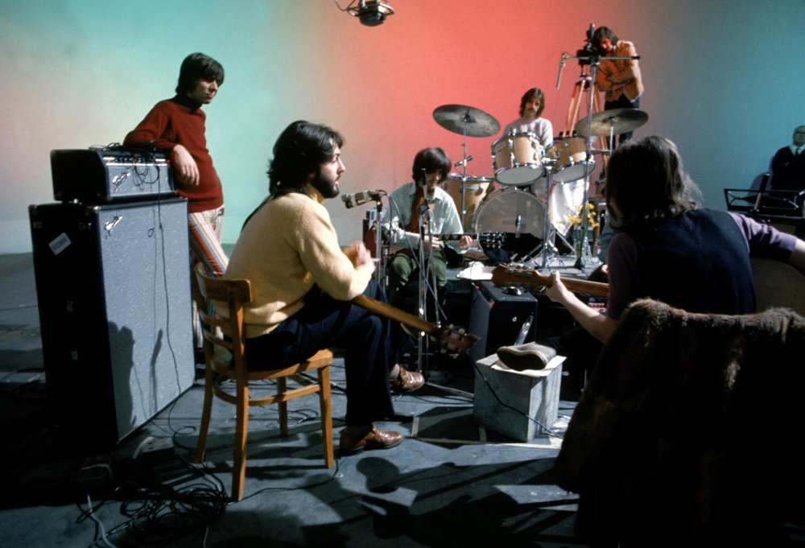

"I THINK THE ORIGINAL IDEA WAS PAUL'S IDEA TO REHEARSE SOME NEW SONGS AND THEN WE WERE GOING TO PICK A LOCATION AND RECORD THE ALBUM OF THE SONGS IN A CONCERT. I SUPPOSE KIND OF LIKE THEY DO THESE DAYS ON UNPLUGGED EXCEPT YOU KNOW IT WASN'T TO BE UNPLUGGED IT WAS TO DO A LIVE ALBUM."
"ONE AFTER 909 IT WAS OUR CHILDHOOD COMING BACK TO US IT WAS THE SORT OF RAW ENERGY FROM OUR YOUTH AND I THINK IT REMINDED US OF THOSE TEENAGE YEARS AND SO IT SURFACED AS DID MAGGIE MAE AND A FEW THINGS LIKE THAT DURING THE LET IT BE SESSIONS WHERE WE WERE JUST DREDGING UP ANYTHING."
"I THINK IT SHOWS ON THE RECORD THAT WHEN WE WERE EXCITED THE TRACK'S EXCITING. IT DOESN'T MATTER WHAT WE'RE GOING THROUGH AS INDIVIDUALS, YOU KNOW ON A BULLSHIT LEVEL WHEN IT GETS TO THE MUSIC YOU KNOW WHEN YOU CAN SEE THAT IT'S REALLY COOL, WE'VE ALL PUT IN A THOUSAND PERCENT."
"THEY WERE QUITE GOOD SESSIONS ONCE WE GOT INTO APPLE I REMEMBER YOU KNOW SITTING ROUND QUITE ENJOYING THE MUSIC, IT WAS INTERESTING MUSIC TO PLAY AND WE ENDED UP ON THE ROOF."
"TWICKENHAM STUDIO WAS VERY COLD AND NOT A VERY NICE ATMOSPHERE SO WE DECIDED TO ABANDON THAT AND GO UP TO SAVILE ROW INTO THE RECORDING STUDIO"
ALBUM
Let It Be
Release date: 08 May 1970

The final Beatles album was first released on 8th May, 1970, just prior to the launch of the cinema film of the same name.
Rehearsals and recording sessions for the album had taken place in January, 1969 first At Twickenham Film Studios and later in the basement and on the roof of their Apple headquarters in London's Savile Row.
A single comprising of "Get Back" and "Don't Let Me Down" was released in April, 1969 but as The Beatles focussed their energies on a new album mainly recorded at Abbey Road, The "Get Back" album as it was then called remained unreleased.

Once Abbey Road had been issued and the completion of the documentary film now imminent, it was noticed that rehearsals of George's song "I Me Mine" featured prominently in the film but had not been recorded in the studio. This was remedied on 3rd January, 1970 when George, Paul and Ringo performed it without John who was in Denmark. A second single from the album, which was now titled Let It Be appeared on 6th March.
Up to now the idea behind the album had been to capture the group "live in the studio" without overdubs or effects but this changed when producer, Phil Spector was brought in to re-produce the tracks. The Long And Winding Road, which had been given a new musical arrangement featuring orchestra and choir, was released as a single in the US and other markets but not the UK and became the group's final #1 single.
The album reached no. 1 for a three week stay during its 59 week chart stay. In the US, the album enjoyed a four week stay at #1 during an initial chart life of 55 weeks.